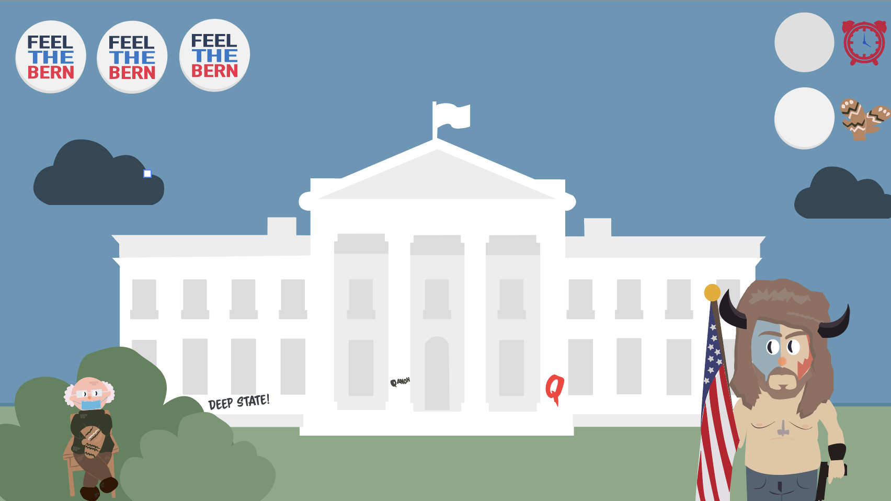

04
Animation
Introduktion
Grundlæggende animation
I forløbet “Grundlæggende Animation” lærte vi at lave interaktive animationer på websider gennem introduktion til programmeringssproget JavaScript. Målet var at udvikle et simpelt “point and click” spil i 16:9-format. Udvikling af spillet startede i koncept- og design-udvikling, blandt andet i Illustrator med formgivning af grafiske elementer. Elementerne blev sat i spil (pun intended) ved hjælp af aktivitets- og statemachine-diagrammer, som bliver brugt til at danne overblik over interaktive flows. Diagrammer blev omdannet til et interaktivt spil gennem HTML, CSS og Javascript.
Indledende øvelser
Ide til Spil
Gennem Mindmaps og Cross Methods (ordkombinationer), brainstormede vi på et spil som brugerne kunne leve sig ind i, hvor brugeren nemt forstod, hvad de skal, hvor der er en konflikt, brugeren skal løse. Første opsamling på denne var en paper prototype. Herefter blev vi introduceret for JavaScript. For at danne os et overblik inden kodning, lavede vi et aktvitetsdiagrammet, der beskriver aktiviteterne i spillet, som består af 'actions' og 'decisions'. Derudover lavede vi et Statemachinediagram, der hjalp os, da vi skulle kode spillet i HTML, CSS & JavaScript.
Det færdige produkt: Bernies Mittens
Fra virale memes til spil
“Bernies Mittens” er en spilfortolkning af alle de memes, der gik viralt efter indsættelsen af Joe Biden. I spillet er Bernies handsker en limited edition og alle vil have fingre i dem. Spilleren skal derfor navigere i en verden fuld af election-merchandise og kun anskaffe sig Bernies udsøgte handsker. Er spilleren grådig og får fat i en enten Bernies Beany eller MAGA-kasket, mister man points.
Den grafiske stil er inspireret af Bernie Sanders politiske kampagne. Her har jeg valgt at bruge Cooper Std, der lægget tæt op ad Sanders officielle font: Jubilat. Dog har Cooper Std. et mere playfull look med store, runder serier, der går hånd-i-hånd med et lidt mere rundt, varmt og legende spil-univers. Cooper Std. er god til overskrifter, men kan være svær at læse i en brødtekst. For at gøre det mere brugervenligt supplerer jeg med Gill Sans, der er en simplere font (blandt andet uden serif), men stadig blød og humanistiske proportioner.
Fra fuglefløjt til grafitti. Mit første udkast var en anelse for idyllisk. I feedback fra en brugerundersøgelse fik jeg kommentarer som “man kan nærmest høre fuglene synge”. For at give mere spænding ændrede jeg både i farverne, eksempeltvis gjorde jeg himlen og skyerne mørkere. Derudover tilføjede jeg Q-anon grafitti på Det Hvide Hus for at tilføje spænding og en reference til noget aktuelt.
Spilbaggrund

Vundet

Tabt

Det har jeg lært
Værktøjer og ressourcer
Adobe XD
Adobe Color wheel
Webfonts
W3-validator
W3 Schools
Unsplash
Google Forms/Survey Monkey
Metoder og produktioner
Moodboard
Stiletyle
Splashbilleder
Favicon
Copy- og micro-copywriting
Prototyping (low og high fidelity)
Brugertest (eks: Tænke-højt-test, A/B-testing)
Deskresearch
Spørgeskeamer
Observationsstudier
Interviews
Google Design Sprint
Brugerrejser
Analyse og formidling af indsigter
Teori
Farvelære
Mobile First
Webdesign koncentioner
Stilarter
Grafisk analyse
Graphic Design Foundations
Research og indsamling af loblive billeder
Dobbelt Diamond
Design Thinking
User Experience (UX)
UI-konventioner (søgefelts placering, global navigation etc.)
Målgruppeanalyse
USP’er
Informations Arkitektur
Kodning
HTML
Layoutdiagram
Nesting
Syntaks
Semantik
Atributter
Debugging
CSS
Block og inlineelementer
Boxmodel
Mediaqueries
Margin, Border og Padding
ID og Classes